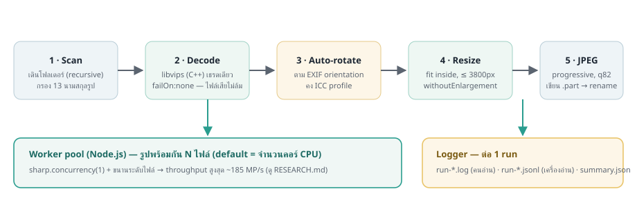

Image Resizer
ปรับขนาดรูปภาพทั้งโฟลเดอร์เป็น JPG อย่างเดียว — กำหนดความยาวด้านที่ยาวที่สุดได้ (เริ่มต้น 3800px) ขับเคลื่อนด้วย sharp / libvips เร็วเต็มคอร์ CPU พร้อมไฟล์ log ละเอียดทุกรูป
ดาวน์โหลดเวอร์ชันล่าสุด
เริ่มใช้ใน 3 ขั้นตอน
โหลดแพ็กเกจพกพา
กดปุ่ม แนะนำสำหรับ Windows ด้านบน — ได้ zip ที่มีโปรแกรม + Node runtime ครบในไฟล์เดียว
แตก zip
คลิกขวา → Extract All วางไว้ที่ไหนก็ได้ (โฟลเดอร์ Program Files ไม่จำเป็น)
ดับเบิลคลิก resize.bat
ลากโฟลเดอร์รูปใส่หน้าต่าง → Enter → รอจบ ผลลัพธ์อยู่โฟลเดอร์ <input>-resized log อยู่ใน _logs/
ทำอะไรได้
🎯 ยาวสุด ≤ 3800px (ปรับได้)
รูปใหญ่ถูกย่อ, รูปเล็กไม่ถูกขยาย — ทุกรูปกลายเป็น JPG ล้วนตามตั้งค่า
🔄 หมุนตาม EXIF อัตโนมัติ
ภาพกล้องที่เก็บแนวตั้งไว้ใน metadata จะถูกหมุนเป็นพิกเซลจริง แสดงถูกทุกโปรแกรม คงสีด้วย ICC
🚀 เร็วเต็มเครื่อง
ขนานที่ระดับไฟล์เท่าจำนวนคอร์ CPU + pin เธรด libvips — พิสูจน์ด้วยข้อมูลจริงใน งานวิจัย
🧾 log ละเอียดทุกรูป
มิติ/ขนาด ก่อน→หลัง, เวลาต่อรูป, error เต็ม ๆ — ทั้ง .log สำหรับคนและ .jsonl สำหรับเครื่อง ดู ระบบ log
🔁 resume ได้ 100%
งานค้างกลางทางรันใหม่ได้เลย ข้ามเฉพาะรูปที่เสร็จแล้ว — เขียนไฟล์แบบ atomic
🛡️ ไฟล์เสียไม่ล้มทั้งชุด
รูพรุนกี่รูปก็ทำต่อ พร้อมบันทึกเหตุผลไว้ใน log ครบ
